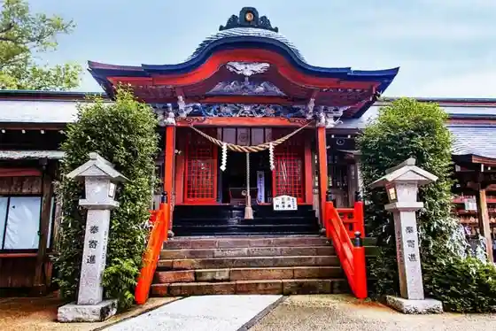
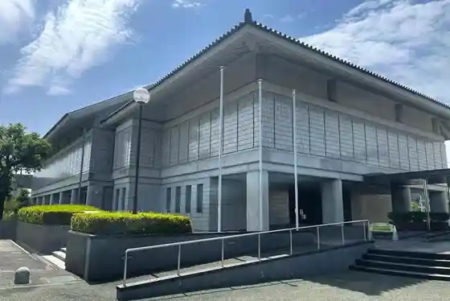

Terayama Ikoi no Plaza
Satsumasendai, Kagoshima · 0996-31-4477 · Official / source link
Sendai Uchu Kan
Satsumasendai, Kagoshima · 0996-31-4477 · Official / source link
Nitta Shrine (Kawai Sanryo)
Satsumasendai, Kagoshima · 0996-22-4722 · Official / source link

Kochu Workshop Maru Takeshi
Satsumasendai, Kagoshima · 0996-26-3113 · Official / source link
Satsumasendai Kawauchi History Museum
Satsumasendai, Kagoshima · 0996-20-2344 · Official / source link

Kawauchi Genshiryokuhatsudensho Tenjikan
Satsumasendai, Kagoshima · 0996-27-3506 · Official / source link
Ningyo Iwa
Satsumasendai, Kagoshima · 0996-25-4700 · Official / source link
to Hama (Karahama) Beach
Satsumasendai, Kagoshima · 0996-22-1866 · Official / source link
Seiho (Nishikata) Beach
Satsumasendai, Kagoshima · 0996-28-1061 · Official / source link
Roadside Station (Hiwaki) Yuyu Kan
Satsumasendai, Kagoshima · 0996-38-2506 · Official / source link
Ikoi Forest Maruyama Park
Satsumasendai, Kagoshima · 0996-37-2300 · Official / source link
Shochu Museum
Satsumasendai, Kagoshima · 0996-38-0345 · Official / source link
Omiya Shrine (Kimigayo Hassho no Chi)
Satsumasendai, Kagoshima · 0996-44-2390 · Official / source link
Nyurai Fumoto Buke Yashiki Gun
Satsumasendai, Kagoshima · 0996-44-5200 · Official / source link
Mukaiyama Nature Park
Satsumasendai, Kagoshima · 0996-44-2371 · Official / source link
Nyurai Onsen
Satsumasendai, Kagoshima · 0996-44-5200 · Official / source link
Fujikawa Tenjin (Garyu Ume)
Satsumasendai, Kagoshima · 0996-42-0753 · Official / source link
Togo Goshiki Shinsui Park Campground
Satsumasendai, Kagoshima · 0996-42-1813 · Official / source link
Saigotakamori Aiken Tsun no Dozo
Satsumasendai, Kagoshima · 0996-42-0753 · Official / source link
Imuta Ike Nature Park
Satsumasendai, Kagoshima · 0996-56-0085 · Official / source link
Tomboro Tembo Tokoro
Satsumasendai, Kagoshima · 09969-6-3930 · Official / source link
Kamikoshiki Nature Park Kyanpu Village (Koshiki Shima)
Satsumasendai, Kagoshima · 09969-2-1112 · Official / source link
Kankosen Ka no Ko
Satsumasendai, Kagoshima · 09969-2-1150 · Official / source link
Koshiki Daimyojin Hashi
Satsumasendai, Kagoshima · 09969-6-3930 · Official / source link
Ota no Hama Seaside Park
Satsumasendai, Kagoshima · 09969-6-3930 · Official / source link
Mae no Taira Tembo Tokoro
Satsumasendai, Kagoshima · 09969-5-1800 · Official / source link
Teuchi Coast
Satsumasendai, Kagoshima · 09969-5-1800 · Official / source link
Tsuri Kakari Saki Lighthouse
Satsumasendai, Kagoshima · 09969-5-1800 · Official / source link
Teuchi Fumoto Buke Yashikiato
Satsumasendai, Kagoshima · 09969-5-1800 · Official / source link
Hachi Shiri Tembo Tokoro
Satsumasendai, Kagoshima · 09969-5-1800 · Official / source link
Nagame no Hama Tembo Tokoro
Satsumasendai, Kagoshima · 09969-6-3930 · Official / source link
Ta Yuki Shiri Tembo Tokoro
Satsumasendai, Kagoshima · 09969-6-3930 · Official / source link
Shinkiro no Oka
Satsumasendai, Kagoshima · 09969-5-1800 · Official / source link
Sato Fumoto Buke Yashiki Tori / Teuchi Buke Yashiki Tori
Satsumasendai, Kagoshima · 09969-6-3930 · Official / source link
Kawauchi Magokoro Literature Museum
Satsumasendai, Kagoshima · 0996-25-5580 · Official / source link
Shika no Ko Bridge
Satsumasendai, Kagoshima · 09969-6-3930 · Official / source link
Suwa Onsen
Satsumasendai, Kagoshima · 0996-44-3472 · Official / source link
Maruyama Onsen
Satsumasendai, Kagoshima · 0996-38-1589 · Official / source link
Kedoin Joryu Tokoro
Satsumasendai, Kagoshima · 0996-31-8115 · Official / source link
Mukaida Park
Satsumasendai, Kagoshima · 0996-25-8282 · Official / source link
Tenjin Ike Tembo Tokoro
Satsumasendai, Kagoshima · 0996-25-8282 · Official / source link
Nakago Ue Ike
Satsumasendai, Kagoshima · 0996-25-8282 · Official / source link
Yanagi Yama Aguri Land
Satsumasendai, Kagoshima · 0996-20-3832 · Official / source link
Seo Kannon Mitaki Park
Satsumasendai, Kagoshima · 09969-5-1800 · Official / source link
Tori no Suyama Tembo Tokoro
Satsumasendai, Kagoshima · 09969-5-1800 · Official / source link
Shi Hi no Onsen
Satsumasendai, Kagoshima · 0996-38-2254 · Official / source link
Kosokusen Koshiki Shima
Satsumasendai, Kagoshima · 0996-32-6458 · Official / source link
Kawauchi Minato Taminaru
Satsumasendai, Kagoshima · 0996-41-5100 · Official / source link
Ryu Ishi
Satsumasendai, Kagoshima · 0996-25-4700 · Official / source link
Kawauchi Takagi Onsen
Satsumasendai, Kagoshima · 0996-28-1362 · Official / source link
Kawauchi Toretate Market
Satsumasendai, Kagoshima · 0996-41-3100 · Official / source link
Kimono Demachi Aruki Experience
Satsumasendai, Kagoshima · 0996-44-5200 · Official / source link
Gatsu Yayama / Kawauchi Kawa Arashi
Satsumasendai, Kagoshima · 0996-26-3849 · Official / source link
Sushi Zen Ka no Ko
Satsumasendai, Kagoshima · 09969-2-0023 · Official / source link
Koshiki Shima
Satsumasendai, Kagoshima · 0996-25-1140 · Official / source link
Hyaku Tsugi Hotaru Village
Satsumasendai, Kagoshima · 0996-23-5111 · Official / source link
Kedoin Gorufu Kurabu
Satsumasendai, Kagoshima · 0996-55-1160 · Official / source link
Kyodo Yu
Satsumasendai, Kagoshima · 0996-28-0884 · Official / source link
Shita no Yu
Satsumasendai, Kagoshima · Official / source link
Koshiki Shima Dangai Kuruzu
Satsumasendai, Kagoshima · 09969-2-1150 · Official / source link
Nyurai Fumoto Tourist Information / Samuraitsurizumu
Satsumasendai, Kagoshima · 0996-44-5200 · Official / source link
Nagano Taki
Satsumasendai, Kagoshima · 0996-44-5200 · Official / source link
Koshiki Museum
Satsumasendai, Kagoshima · 09969-4-2211 · Official / source link
Kiyoshi Iro Castle Ruins no Horikiri
Satsumasendai, Kagoshima · 0996-44-5200 · Official / source link
Kyu Masuda Ie House
Satsumasendai, Kagoshima · 0996-44-4111 · Official / source link
Kedoin Seitaikei Hozon Shiryo Shisetsu Akuaimu
Satsumasendai, Kagoshima · 0996-56-0085 · Official / source link
Ki no Kuchi Tembo Tokoro
Satsumasendai, Kagoshima · 09969-6-3930 · Official / source link
Koshiki Bridge
Satsumasendai, Kagoshima · 09969-6-3930 · Official / source link
Kame Castle Ruins
Satsumasendai, Kagoshima · 09969-6-3930 · Official / source link
Koshiki Furutsu Sono
Satsumasendai, Kagoshima · 09969-2-0429 · Official / source link
Se Se no Ura Shuraku
Satsumasendai, Kagoshima · 09969-6-3930 · Official / source link
Koto no Yaken Zo
Satsumasendai, Kagoshima · 09969-5-1800 · Official / source link
Kirishitan Junkyochi
Satsumasendai, Kagoshima · 09969-5-1800 · Official / source link
Tsu Kuchiban Tokoro Ato
Satsumasendai, Kagoshima · 09969-5-1800 · Official / source link
Koshikiterasu
Satsumasendai, Kagoshima · 09969-2-0525 · Official / source link
Teuchin Hama Ya
Satsumasendai, Kagoshima · 09969-7-0005 · Official / source link
Mitchiri Sogen
Satsumasendai, Kagoshima · 09969-5-1800 · Official / source link
Maruni Miso Ramen Shi Hi no Main Shop
Satsumasendai, Kagoshima · 0996-21-0202 · Official / source link
Koshiki no Ryoshi Ie Umi Hijiri Maru
Satsumasendai, Kagoshima · 09969-3-2522 · Official / source link
Yamashita Shoten Koshiki Shima Main Shop Shima Baru
Satsumasendai, Kagoshima · Official / source link
Raisusutairushoppuharada Okudosan Experience
Satsumasendai, Kagoshima · 0996-38-0054 · Official / source link
Yama no Ichigo Ya San Higashi Farm
Satsumasendai, Kagoshima · 090-5925-4541 · Official / source link